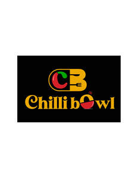

Trade Mark Journal No.2025/028 11 July 2025
UK00004212229 1 June 2025 (43)

- Class 43
- Sushi restaurant services; Fast-food restaurant services; Hotel restaurant services; Take-out restaurant services; Bar and restaurant services; Restaurant and bar services; Take-away restaurant services; Carvery restaurant services; Ramen restaurant services; Restaurant services; Salad bars [restaurant services]; Tempura restaurant services; Washoku restaurant services; Restaurant reservation services; Restaurants; Carry-out restaurants; Japanese restaurant services; Self-service restaurant services; Grill restaurants; Mobile restaurant services; Reservation of restaurants; Spanish restaurant services; Booking of restaurant seats; Udon and soba restaurant services; Serving food and drink for guests in restaurants; Catering in fast-food cafeterias; Serving food and drink in restaurants and bars; Restaurants (Self-service -); Self-service restaurants; Restaurant services for the provision of fast food; Tourist restaurants; Restaurant services incorporating licensed bar facilities; Fast food restaurants; Bistro services; Delicatessens [restaurants]; Providing food and drink for guests in restaurants; Provision of food and drink in restaurants; Providing restaurant services; Eateries; Restaurant information services; Providing food and drink in restaurants and bars; Restaurant services provided by hotels; Catering of food and drinks; Food and drink catering for banquets; Food and drink catering; Catering of food and drink; Catering (Food and drink -); Serving food and drink in doughnut shops; Brasserie services; Reservation and booking services for restaurants and meals; Cafe services; Hotel catering services; Food and drink catering for institutions; Agency services for reservation of restaurants; Hotel reservations; Providing food and drink in bistros; Takeaway food and drink services; Serving food and drink in Internet cafes; Take-away food and drink services; Food and drink catering for cocktail parties; Cocktail lounge buffets; Takeaway food services; Take-away food services; Serving food and drink for guests; Resort hotel services; Making reservations and bookings for restaurants and meals; Catering services for company cafeterias; Serving food and drinks; Providing food and drink in doughnut shops; Café services; Reservation of hotel accommodation; Catering for the provision of food and drink; Hotel reservation services; Take-away fast food services; Hospitality services [food and drink]; Providing reviews of restaurants and bars; Wine bar services; Hotel accommodation reservation services; Corporate hospitality (provision of food and drink); Guesthouse; Pet hotel services; Providing hotel and motel services; Providing food and drink catering services for exhibition facilities; Providing room reservation and hotel reservation services; Catering services for providing European-style cuisine; Catering for the provision of food and beverages; Providing food and drink in Internet cafes; Beer bar services; Snack bar services; Consultancy services in the field of food and drink catering; Catering services for the provision of food and drink; Providing reviews of restaurants; Pizza parlors; Tapas bars; Rental of dishes; Club services for the provision of food and drink; Catering services for providing Japanese cuisine; Providing food and drink catering services for convention facilities; Coffee bar services; Night club services [provision of food]; Providing food and drink for guests; Hotel room booking services; Providing food and drink catering services for fair and exhibition facilities; Hotel accommodation services; Hookah bar services; Private members dining club services; Catering services for providing Spanish cuisine; Self-service cafeteria services; Catering; Rental of food service equipment; Rental of food service apparatus.
Dua food services LTD